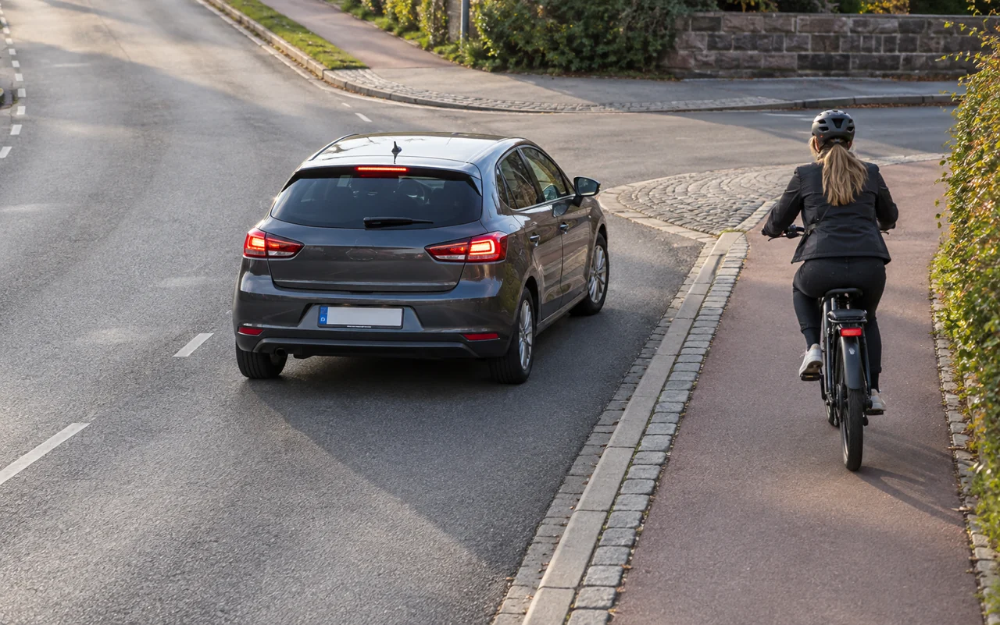

Grundmanøvrer · Se situationen. Tag stilling.
Hvad gør du før højresving?
Du kører langs en cykelsti og vil dreje til højre. En hurtig elcyklist er bag dig og kan nå op på siden før svinget.
Orienterer mig igen lige før svinget.
Blink
Cyklisten kan flytte sig hurtigt. Gentag orienteringen, og hold tilbage for ligeudkørende cykeltrafik.